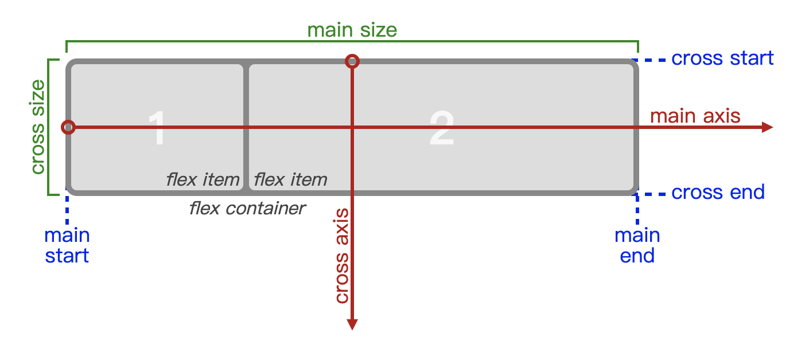
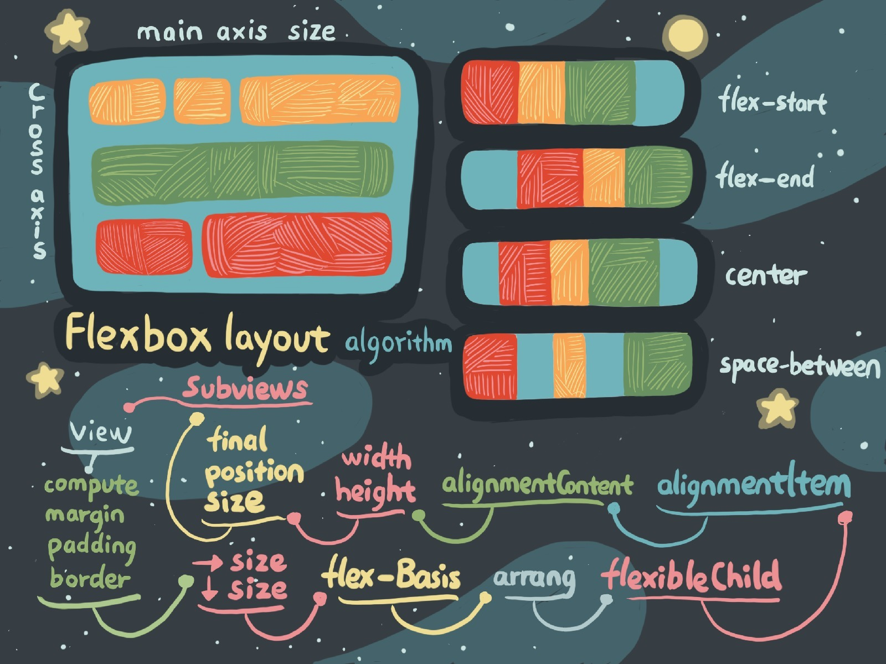

- 00 开篇词 锚定一个点，然后在这个点上深耕.md
- 01 建立你自己的iOS开发知识体系.md
- 02 App 启动速度怎么做优化与监控？.md
- 03 Auto Layout 是怎么进行自动布局的，性能如何？.md
- 04 项目大了人员多了，架构怎么设计更合理？.md
- 05 链接器：符号是怎么绑定到地址上的？.md
- 06 App 如何通过注入动态库的方式实现极速编译调试？.md
- 07 Clang、Infer 和 OCLint ，我们应该使用谁来做静态分析？.md
- 08 如何利用 Clang 为 App 提质？.md
- 09 无侵入的埋点方案如何实现？.md
- 10 包大小：如何从资源和代码层面实现全方位瘦身？.md
- 11 热点问题答疑（一）：基础模块问题答疑.md
- 12 iOS 崩溃千奇百怪，如何全面监控？.md
- 13 如何利用 RunLoop 原理去监控卡顿？.md
- 14 临近 OOM，如何获取详细内存分配信息，分析内存问题？.md
- 15 日志监控：怎样获取 App 中的全量日志？.md
- 16 性能监控：衡量 App 质量的那把尺.md
- 17 远超你想象的多线程的那些坑.md
- 18 怎么减少 App 电量消耗？.md
- 19 热点问题答疑（二）：基础模块问题答疑.md
- 20 iOS开发的最佳学习路径是什么？.md
- 21 除了 Cocoa，iOS还可以用哪些 GUI 框架开发？.md
- 22 细说 iOS 响应式框架变迁，哪些思想可以为我所用？.md
- 23 如何构造酷炫的物理效果和过场动画效果？.md
- 24 A_B 测试：验证决策效果的利器.md
- 25 怎样构建底层的发布和订阅事件总线？.md
- 26 如何提高 JSON 解析的性能？.md
- 27 如何用 Flexbox 思路开发？跟自动布局比，Flexbox 好在哪？.md
- 28 怎么应对各种富文本表现需求？.md
- 29 如何在 iOS 中进行面向测试驱动开发和面向行为驱动开发？.md
- 30 如何制定一套适合自己团队的 iOS 编码规范？.md
- 31 iOS 开发学习资料和书单推荐.md
- 32 热点问题答疑（三）.md
- 33 iOS 系统内核 XNU：App 如何加载？.md
- 34 iOS 黑魔法 Runtime Method Swizzling 背后的原理.md
- 35 libffi：动态调用和定义 C 函数.md
- 36 iOS 是怎么管理内存的？.md
- 37 如何编写 Clang 插件？.md
- 38 热点问题答疑（四）.md
- 39 打通前端与原生的桥梁：JavaScriptCore 能干哪些事情？.md
- 40 React Native、Flutter 等，这些跨端方案怎么选？.md
- 41 原生布局转到前端布局，开发思路有哪些转变？.md
- 42 iOS原生、大前端和Flutter分别是怎么渲染的？.md
- 43 剖析使 App 具有动态化和热更新能力的方案.md
- 用户故事 我是如何学习这个专栏的？.md
- 结束语 慢几步，深几度.md
27 如何用 Flexbox 思路开发？跟自动布局比，Flexbox 好在哪？
你好，我是戴铭。今天，我要和你跟你聊聊 Flexbox。
你很有可能不知道Flexbox 是啥，但一定不会对 React Native、Weex 和 Texture（AsyncDisplayKit） 感到陌生，而Flexbox就是这些知名布局库采用的布局思路。不可小觑的是，苹果公司官方的UIStackView，也是采用Flexbox思路来实现布局的。
接下来，我们就一起来看看Flexbox布局思路有什么优势，以及如何用它来实现布局。
Flexbox 好在哪？
目前来看，iOS 系统提供的布局方式有两种：
- 一种是 Frame 这种原始方式，也就是通过设置横纵坐标和宽高来确定布局。
- 另一种是自动布局（Auto Layout），相比较于 Frame 需要指出每个视图的精确位置，自动布局对于视图位置的描述更加简洁和易读，只需要确定两个视图之间的关系就能够确定布局。
通过 Masonry和 SnapKit这些第三方库，自动布局的易用性也有了很大提升。而且iOS 12 以后，苹果公司也已经解决了自动布局在性能方面的问题（这里，你可以再回顾下前面第4篇文章《Auto Layout 是怎么进行自动布局的，性能如何？》中的相关内容）。
那么在这种情况下，我们为什么还要关注其他布局思路呢？关于原因，我觉得主要包括以下两个方面。
其一，自动布局思路本身还可以再提高。Flexbox 比自动布局提供了更多、更规范的布局方法，布局方式考虑得更全面，使用起来也更加方便。同时，苹果公司基于 Flexbox 的布局思路，又在自动布局之上封装了一层 UIStackView。
其二，针对多个平台的库需要使用更加通用的布局思想。Flexbox 在2009年被 W3C 提出，可以很简单、完整地实现各种页面布局，而且还是响应式的，开始被应用于前端领域，目前所有浏览器都已支持。后来通过 React Native 和 Weex 等框架，它被带入到客户端开发中，同时支持了 iOS 和 Android。
与自动布局思路类似，Flexbox 使用的也是描述性的语言来布局。使用 Flexbox 布局的视图元素叫 Flex容器（flex container），其子视图元素叫作Flex项目（flex item）。Flexbox 布局的主要思想是，通过Flex容器设定的属性来改变内部Flex项目的宽、高，并调整 flex项目的位置来填充 flex容器的可用空间。
下图来自 W3C 官网，表示了 flex容器和 flex项目间的关系，其中 Main-Axis 表示横轴方向，Cross-Axis 表示纵轴方向。

- 关于Flexbox 的详细入门资料，你可以参看阮一峰老师的“Flex 布局教程：语法篇”一文。而Flexbox 在 W3C 上完整的定义，你可以点击这个链接查看。如果你的工程目前还没有迁移到 React Native 或 Weex，那我觉得你可以通过 Texture 来使用 Flexbox 思路开发界面布局。而关于React Native和 Weex 使用 Flexbox 布局的思路，我会在专栏后面的文章“原生布局转到前端布局，开发思路的转变有哪些？”里和你详细说明。
Texture 如何使用 Flexbox 思路进行布局？
基于Flexbox的布局思路，Texture框架的布局方案考虑得十分长远，也已经十分成熟，虽然学习起来需要费些力气，但是性能远好于苹果的自动布局，而且写起来更简单。
Texture框架的布局中，Texture考虑到布局扩展性，提供了一个基类 ASLayoutSpec。这个基类 提供了布局的基本能力，使 Texture 可以通过它扩展实现多种布局思路，比如 Wrapper、Inset、Overlay、Ratio、Relative、Absolute 等布局思路，也可以继承 ASLayoutSpec 来自定义你的布局算法。
ASLayoutSpec的子类，及其具体的功能如下：
ASAbsoluteLayoutSpec // 绝对布局
ASBackgroundLayoutSpec // 背景布局
ASInsetLayoutSpec // 边距布局
ASOverlayLayoutSpec // 覆盖布局
ASRatioLayoutSpec // 比例布局
ASRelativeLayoutSpec // 顶点布局
ASCenterLayoutSpec // 居中布局
ASStackLayoutSpec // 盒子布局
ASWrapperLayoutSpec // 填充布局
ASCornerLayoutSpec // 角标布局
ASLayoutSpec 子类实现了各种布局思路，ASLayoutSpec 会制定各种布局相通的协议方法，遵循这些协议后可以保证这些子类能够使用相同的规则去实现更丰富的布局。
通过 ASLayoutSpec 遵循的 ASLayoutElement 协议，可以知道 ASLayoutSpec 提供的基本能力有哪些。ASLayoutElement 协议定义如下：
@protocol ASLayoutElement <ASLayoutElementExtensibility, ASTraitEnvironment, ASLayoutElementAsciiArtProtocol>
#pragma mark - Getter
@property (nonatomic, readonly) ASLayoutElementType layoutElementType;
@property (nonatomic, readonly) ASLayoutElementStyle *style;
- (nullable NSArray<id<ASLayoutElement>> *)sublayoutElements;
#pragma mark - Calculate layout
// 要求节点根据给定的大小范围返回布局
- (ASLayout *)layoutThatFits:(ASSizeRange)constrainedSize;
// 在子 layoutElements 上调用它来计算它们在 calculateLayoutThatFits: 方法里实现的布局
- (ASLayout *)layoutThatFits:(ASSizeRange)constrainedSize parentSize:(CGSize)parentSize;
// 重写此方法以计算 layoutElement 的布局
- (ASLayout *)calculateLayoutThatFits:(ASSizeRange)constrainedSize;
// 重写此方法允许你接收 layoutElement 的大小。使用这些值可以计算最终的约束大小。但这个方法要尽量少用
- (ASLayout *)calculateLayoutThatFits:(ASSizeRange)constrainedSize
restrictedToSize:(ASLayoutElementSize)size
relativeToParentSize:(CGSize)parentSize;
- (BOOL)implementsLayoutMethod;
@end
通过上面代码可以看出，协议定义了 layoutThatFits 和 calculateLayoutThatFits 等回调方法。其中，layoutThatFits 回调方法用来要求节点根据给定的大小范围返回布局，重写 calculateLayoutThatFits 方法用以计算 layoutElement 的布局。定义了统一的协议方法，能让 ASLayoutSpec 统一透出布局计算能力，统一规范的协议方法，也有利于布局算法的扩展。
接下来，我们一起看看ASLayoutSpec的子类中，应用最广泛的ASStackLayoutSpec。它和 iOS 中自带的 UIStackView 类似，布局思路参照了 Flexbox，比如 horizontalAlignment、alignItems、flexWrap 等属性很容易和 Flexbox 对应上。
下面示例是一段官方的 ASStackLayoutSpec 示例代码。ASStackLayoutSpec 布局思路和 Flexbox是一样的，所以我们通过示例可以了解，如何通过 Texture 使用 Flexbox 布局思路开发界面：
- (ASLayoutSpec *)layoutSpecThatFits:(ASSizeRange)constraint
{
// 创建一个纵轴方向的 ASStackLayoutSpec 视图容器 vStack
ASStackLayoutSpec *vStack = [[ASStackLayoutSpec alloc] init];
// 设置两个子节点，第一个节点是标题，第二个正文内容
[vStack setChildren:@[titleNode, bodyNode];
// 创建一个横轴方向的 ASStackLayoutSpec 视图容器 hstack
ASStackLayoutSpec *hstack = [[ASStackLayoutSpec alloc] init];
hStack.direction = ASStackLayoutDirectionHorizontal;
hStack.spacing = 5.0; // 设置节点间距为5
// 在 hStack 里添加 imageNode 和 vStack 节点
[hStack setChildren:@[imageNode, vStack]];
// 创建一个 ASInsetLayoutSpec 容器，设置四周边距为5，将 hStack 作为其子节点
ASInsetLayoutSpec *insetSpec = [ASInsetLayoutSpec insetLayoutSpecWithInsets:UIEdgeInsetsMake(5,5,5,5) child:hStack];
return insetSpec;
}
上面这段代码，会先创建一个纵轴方向的 ASStackLayoutSpec 视图容器 vStack；然后，为 vStack 设置两个子节点，第一个节点是标题，第二个节点是正文内容；接下来，创建一个横轴方向的 ASStackLayoutSpec 视图容器 hstack，在 hStack 里添加 imageNode 和 vStack 节点；最后，创建一个 ASInsetLayoutSpec 容器，设置四周边距为5，将 hStack 作为其子节点。
上面示例代码对应的视图效果如下：
- 除了 Texture 用到了 Flexbox 的布局思路，React Native 和 Weex 也用到了这个布局思路。这两个框架对 Flexbox 算法的实现，是一个叫作Yoga 的 C++ 库。
除了 React Native 和 Weex 之外，Yoga 还为很多其他开源框架提供支持，比如 Litho、ComponentKit 等。
为了能够用于各个平台，Yoga是由 C/C++ 语言编写的，依赖少，编译后的二进制文件也小，可以被方便地集成到 Android 和 iOS 上。
随着新硬件的不断推出，比如手表和折叠屏手机，你可能还需要掌握更多的布局算法，以不变应万变。比如说，除了 Flexbox 思路的布局 ASStackLayoutSpec以外，Texture中还有 Wrapper、Inset、Overlay、Ratio、Relative、Absolute 等针对不同场景的布局思路，同时还支持自定义布局算法。
那么，接下来我就跟你聊聊 Flexbox 的算法是怎样的。了解Flexbox的布局算法设计，一方面能够让你更好地理解 Flexbox 布局；另一方面，你也可以借此完整地了解一个布局算法是怎样设计的，使得你以后也能够设计出适合自己业务场景的布局算法。
Flexbox 算法
Flexbox 算法的主要思想是，让 flex容器能够改变其flex项目的宽高和顺序，以填充可用空间，flex容器可以通过扩大项目来填充可用空间，或者缩小项目以防止其超出其可用空间。
首先，创建一组匿名的 flex 项目，按照这组匿名 flex项目设置的排列规则对其进行排列。
- 第一步，确定 flex项目的 main space 和 cross space，如果 flex容器定义了大小就直接使用定义的大小；否则， 从 flex容器的可用空间里减去 margin、border、padding。
- 第二步，确定每个项目 的 flex base 大小和假设的大小，其中假设的大小是项目依据它最小和最大的大小属性来确定的。flex 容器的大小，由它的大小属性来确定。
这个计算过程中，flex容器的最小内容大小，是由它所有项目的最小内容大小之和算出的；而flex容器的最大内容大小，则是由它所有项目的最大内容大小之和确定出。
接着，将 flex项目收集到 flex lines 中。如果 flex容器是单行，那么就把所有的 flex项目都收集到单个 flex line 里。否则，就从第一个未收集的项目开始尽可能多地收集 flex项目到 flex line 里，根据 flex容器的 inner 大小判断是否当前 flex line 收集满。重复操作，直到将所有 flex项目都被收集到了 flex lines 里。
处理完 flex lines 后，需要通过使用过的大小和可用大小来确定每个项目的 cross 大小，然后计算每个 flex line 的 cross 大小以及 flex line 里每个 flex项目的 cross 大小。
最后，进行 Main-Axis 对齐和 Cross-Axis 对齐。
- Main-Axis 对齐就是分配剩余空间。对于每个 flex line，如果有剩余空间， margin 设置为 auto 的话，就平均分配剩余空间。
- Cross-Axis 对齐，先要解决自动 margin，然后沿 cross-axis 对齐所有 flex items；随后确定 flex container 使用的 cross 大小；最后对齐所有 flex lines。
结合视图的概念，简化后 Flexbox 布局算法如下图：

- 如图中所示，其中 View 类似 flex container，View 的 Subviews 类似 flex items，flexbox 的算法简而言之就是：首先依据 View 的 margin、padding、border 确定出横纵大小，接下来确定排列，根据 View 的大小确定 Subviews 的行内容，确定出行中每个 Subview 的大小，最终确定出 Subview 的位置。小结
在今天这篇文中，我与你介绍了 Flexbox 比 iOS 系统自带的自动布局好在哪，还举例说明了 Texture 是如何利用 Flexbox 进行 iOS 开发的。
其实， iOS 系统自带的 UIStackView 也是依据 Flexbox 思路开发的。我们都知道，苹果公司一般不轻易使用第三方技术。这，也就表明了 Flexbox 的布局思路是非常优秀的。
所以，在最后我还跟你分享了 Flexbox 的布局算法。如果你想知道这个算法的具体实现，可以直接查看 Yoga 的代码。
我以前也做过一个将 HTML 代码转换成 Texture 代码的项目 HTN，HTML 使用 Flexbox 写的界面布局可以直接转成对应的 Texture 代码，使用示例代码如下：
public func htmlToTexture() {
// inputLb.stringValue 是 html 代码
let treeBuilder = HTMLTreeBuilder(inputLb.stringValue)
_ = treeBuilder.parse()
// 解析 CSS
let cssStyle = CSSParser(treeBuilder.doc.allStyle()).parseSheet()
// 生成 DOM 树
let document = StyleResolver().resolver(treeBuilder.doc, styleSheet: cssStyle)
document.des() //打印包含样式信息的 DOM 树
//转 Textrue
let layoutElement = LayoutElement().createRenderer(doc: document)
_ = HTMLToTexture(nodeName:"Flexbox").converter(layoutElement);
nativeCodeLb.string = ""
}
课后小作业
如果你还没有开始使用 Flexbox ，请你立刻集成 Yoga 对你业务中一个页面使用 Flexbox 布局重写一遍吧。如果你不想集成第三方库，使用 UIStackView 也行。
今天的作业是基于 ASLayoutElement 协议，实现一个 Texture 自定义布局类。这个布局算法可以很简单，主要是想要帮你验证下你学习 Flexbox 算法的成果。
感谢你的收听，欢迎你在评论区给我留言分享你的观点，也欢迎把它分享给更多的朋友一起阅读。
© 2019 - 2023 Liangliang Lee. Powered by gin and hexo-theme-book.